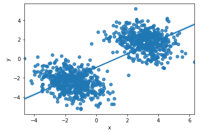
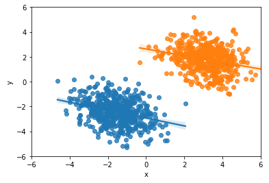

Das Simpson-Paradoxon
Breno Menezes
Überblick / Gliederung
- Einführung
- Beispiele
- Formelle Definition
- Abschluss
Einführung
Einführung
Entscheidungen werden auf der Grundlage von Daten getroffenStatistik: Sammlung, Organisation, Analyse, Interpretation und Präsentation von Daten
Interpretation ist subjektiv
Interpretation ist subjektiv

Interpretation ist subjektiv
Das Simpson-Paradoxon
"... wird eine Gesamtstichprobe in Teilstichproben unterteilt, so können sich in allen Teilstichproben Zusammenhänge zeigen, die systematisch nicht dem Zusammenhang in der Gesamtstichprobe entsprechen oder gar konträr ausfallen."[1]Beispiel 1
Mehr Geld macht glücklicher

Mehr Geld macht glücklicher

Beispiel 2
Krankenhaus A oder B?
Krankenhaus A
900/1000 geheilt
Krankenhaus B
800/1000 geheilt
besser ins Krankenhaus A gehen, oder?
Krankenhaus A oder B?
Krankenhaus A
Schwere Fälle: 30/100
Einfache Fälle: 870/900
30% & 96.7%
Krankenhaus B
Schwere Fälle: 210/400
Einfache Fälle: 590/600
52.5% & 98.3%
Krankenhaus A oder B?
- Krankenhaus B hat in beiden Fällen bessere Überlebensraten
- Unbeachtete Variablen können die Schlussfolgerung über einen Fakt völlig verändern (Schweregrad)
Formelle Definition
Krankenhaus A oder B?
Krankenhaus A
Schwere Fälle: 30/100
Einfache Fälle: 870/900
30% & 96.7%
P(U)=0.1 * 0.3 + 0.9 * 0.967
P(U)=0.9
Krankenhaus B
Schwere Fälle: 210/400
Einfache Fälle: 590/600
52.5% & 98.3%
P(U)=0.4 * 0.525 + 0.6 * 0.983
P(U)=0.8
Abschluss
Das Simpson-Paradoxon
Statistiken ohne Kontext sind gefährlichFehler vermeiden:
- Daten Aufteilung
- Fokus auf die richtigen Variablen